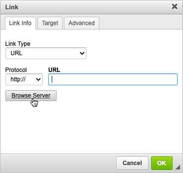
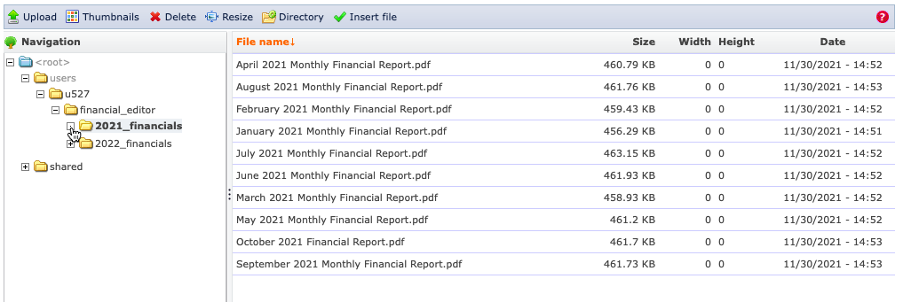
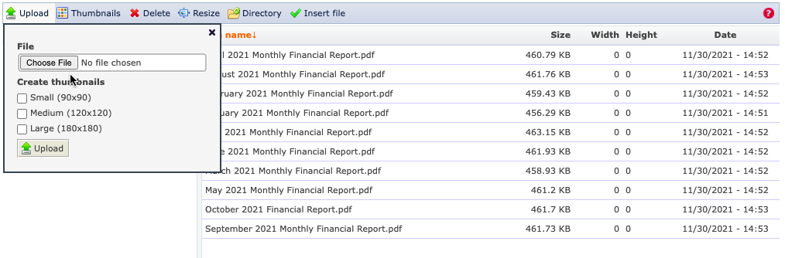
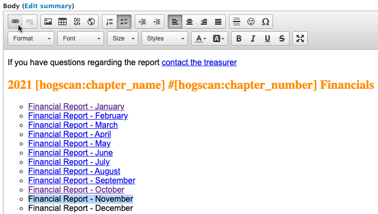
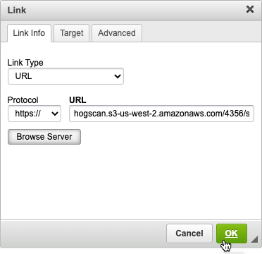

Upload Financial Report to the Website
- Please note that prior to doing anything in the production environment you can test in the sandbox environment first. This environment is used for testing and is not seen by members.
- Your webmaster will also help with any questions you may have.
- Login to your account on raleighhog.com
- Navigate to the Financial Reports page
- Click the Edit tab.
- Highlight the report you want to add and click the link icon. It looks like a chain link. See image below
- Upload the local PDF to the server as follows
- In the window that opens, see image below, click the Browse Server button
- If needed, expand the financial_editor subdirectories by clicking the plus sign (+) within the box until you see the year for which you will be updating. Click the directory name, then click Upload from the menu bar. See image below
- Click the Choose File button and select the file you want to upload. This file will be on your machine in whichever directory you placed it. When the file finishes loading click the Upload button. Click the x in the upper right to close the window. See image below
- The PDF has been successfully uploaded to the server
 - In the list of files, double click on the file you just uploaded to select it
- Click the OK button in the resulting window. See image below
- Scroll to the bottom of the page and click the Save button
- You're done. The current month's Financial Report is available/viewable by chapter members.

